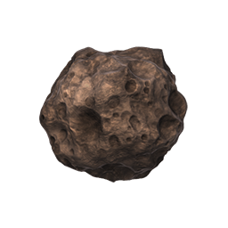

O asteroide remoto

Quando voltamos os olhos para o vasto ceu do espaço vemos varios asteroides e eles podem ser
- corpos C: são escuros e refletem pouco a luz solar
- corpos S: são claros e refletem bem a luz
- corpos M: são os que refletem melhor a luz solar, por serem metálicos